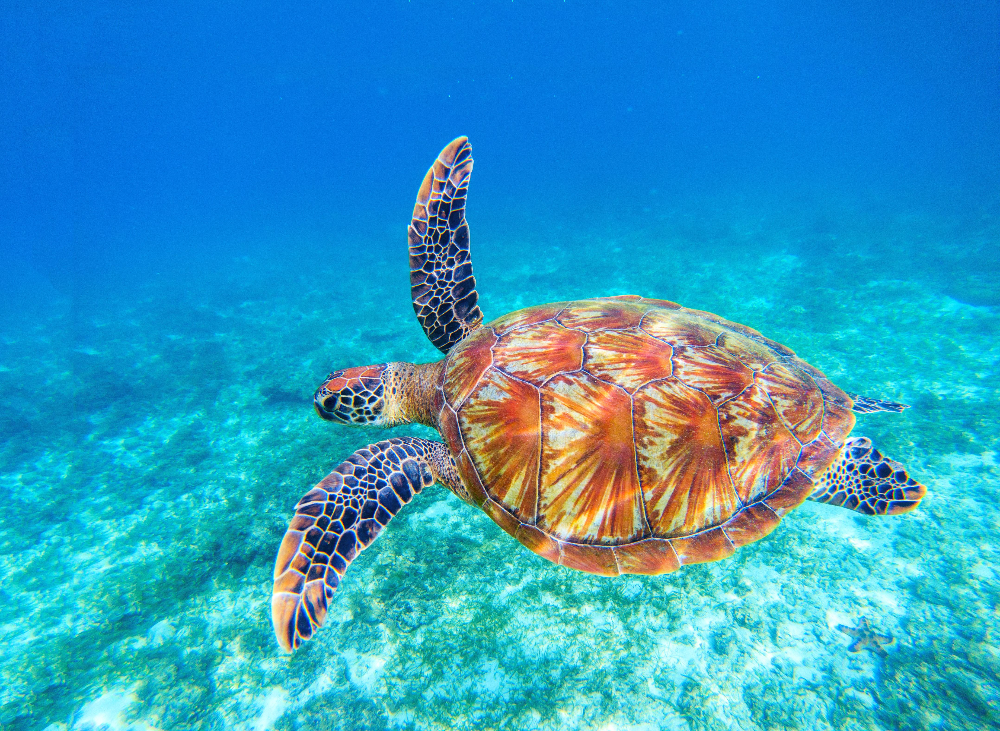
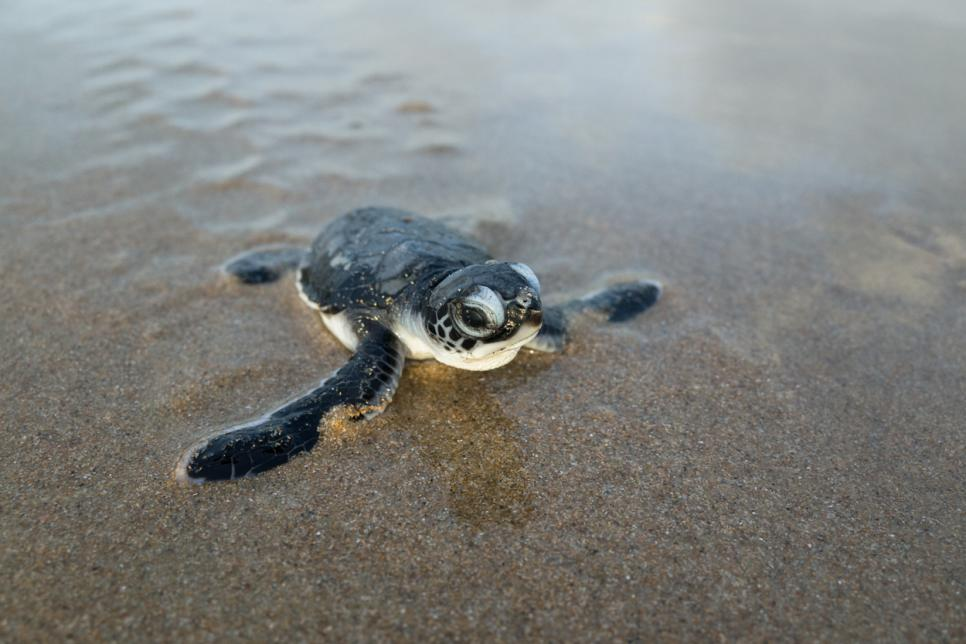
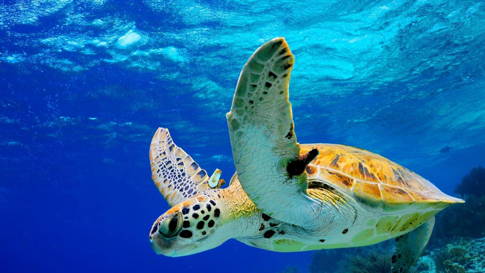
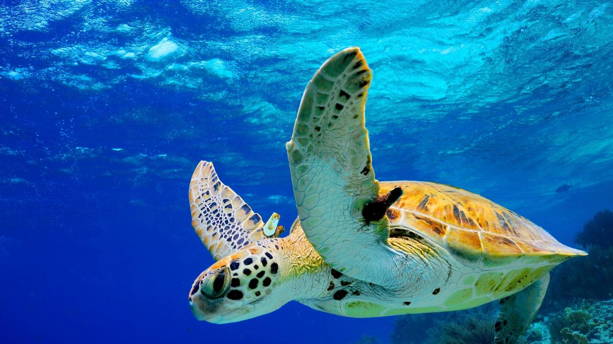
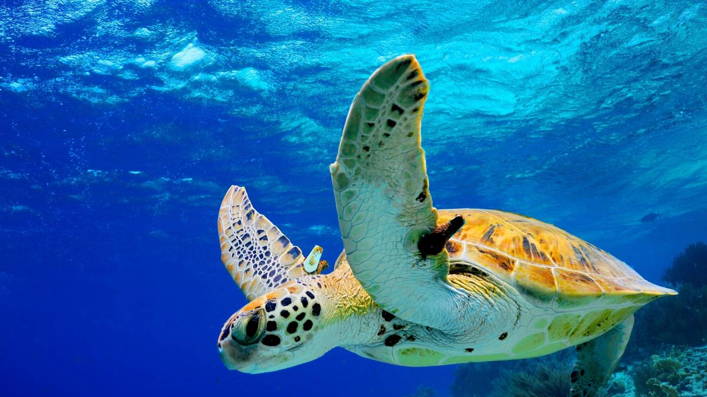
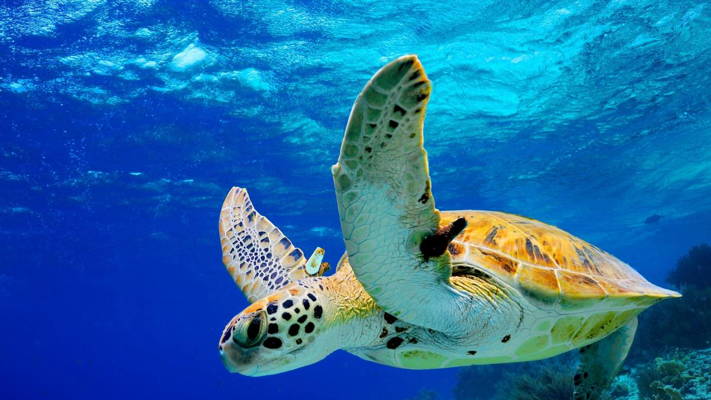

 


Sea Turtle Hatchery And Rescue Centre
The SL Turtle Hatcheries rescues and rehabilitates injured sea turtles at rescue facilities in Sri Lanka; the Sea Turtle Hatchery and Rescue Centre, the Bentota Turtle Hatchery, and the Victor Hasselblad Sea Turtle Research And Conservation Centre in Kosgoda and many more are part of this organization. SL Turtle Hatcheries is a government project with a mission to protect the turtle population in Sri Lanka. At these sites, turtles receive comprehensive veterinary care before being released back into the wild. In addition, the charity utilizes innovative research techniques to study sea turtle populations and their habitats to address gaps in our knowledge about these animals. Furthermore, the charity runs education outreach initiatives to resort guests and local schools to educate them on turtle biology, conservation, and current research findings
Through campaigning and hands-on conservation efforts, we aim to safeguard threatened sea turtle populations. For example, we work with other conservation organizations and concerned individuals to put a stop to the driftnet fisheries sector. Furthermore, they actively advocate against oil and gas extraction projects in Sri Lanka that endanger five species of sea turtles. In addition, we use volunteers and partner groups to safeguard nesting females in Hikkaduwa, Kosgoda, and Bentota.
Sea turtle populations differ from species to species. Some sea turtle populations are relatively rich, while others struggle to be critically engaged.The calculation is difficult to estimate precisely. Male sea turtles do not leave the ocean during the nesting season, making it hard to count their real numbers. However, because female sea turtles account for 90% of the population, we can gain a decent picture of the population by observing nesting female sea turtles.
Our waters are home to an estimated 1,030,000 nesting female sea turtles. If 90% of all sea turtles are female, adding 10% male sea turtles brings the total number of sea turtles left in the world to roughly 1,133,000 - one million, one hundred thirty-three thousand. The Olive Ridley sea turtle, with a population of about one million, is by far the most numerous. While over a million sea turtles may appear to be a large amount, this figure was far greater only a few decades ago. If population numbers continue to drop, the leatherback turtle might become extinct within the next 20 years.
The coastlines of Sri Lanka are visited by five of the world's seven species of sea turtles during the breeding season. They are the Olive Ridley (Lepidochelys olivacea), Loggerhead (Caretta caretta), Green Turtle (Chelonia mydas), Hawksbill Turtle (Eretmochelys imbricata), and Leatherback (Dermochelys coriacea). The sea turtles are called Kesbawa in Sinhala and Amai in Tamil. Unfortunately, constant vigilance is required at Sri Lanka's numerous nesting beaches to safeguard the nests from all types of poachers. Discover this magnificent nation while learning about a new culture and contributing to the preservation of the marine environment.
At the Kosgoda rookery, there were 332 nests per kilometer on average per year. The main turtle nesting location in Sri Lanka, the Rekawa rookery, has a substantially higher average yearly nesting rate of 416 per kilometer (Ekanayake et al., 2002). Despite having less nests than Rekawa and other nesting beaches across the world, Kosgoda rookery is still regarded as an important nesting beach in the Indian subcontinent.
